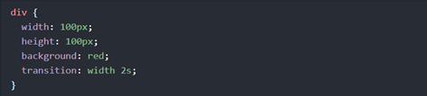
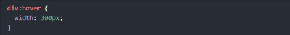
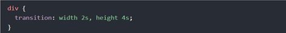
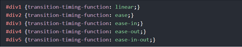
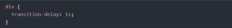
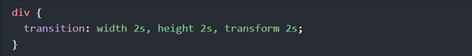
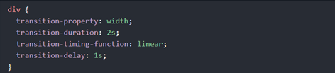
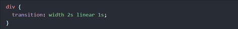

CSS Transition는 속성들을 주어진 시간동안 부드럽게 바꿀 수 있도록 한다.
마우스를 아래의 요소에 올려 CSS Transition 효과를 봐라:
CSS
이번 chapter에서 다음과 같은 속성들을 배운다:
transition 효과를 주기위해, 2가지를 지정해야한다:
Note:지속시간 부분이 지정되지 않는다면, 디폴트 값이 0이므로 transition은 아무 효과를 가지지 않는다.
다음의 예시는 100px*100px red <div> 요소를 보여준다.<div>요소는 또한 2초간의 지속시간동안 너비 속성에 대한 특정한 transition 효과를 가진다.
Example
transition 효과는 특정한 CSS속성(너비)이 값을 바꿀 때 시작된다.
사용자가 <div>요소 위로 마우스를 가져가면 width속성에 새로운 값이 지정된다.
Example
커서가 요소 밖으로 나오면 점차 원래 스타일로 다시 바뀐다.
다음의 예는 너비는 2초, 높이는 4초 동안의 transition 효과를 더한다:
Example
transition-timing-function 속성은 transition 효과의 속도 곡선을 지정한다.
transition-timing-function 속성은 다음의 값을 가진다:
다음 예는 사용할 수 있는 여러가지 속도 곡선을 보여준다.
Example
transition-delay 속성은 transition 효과에 지연시간을 지정한다.
다음의 예는 시작전에 1초의 지연시간을 가진다:
Example
다음의 예시는 변형에 transition효과를 더한다:
Example
CSS transition 속성은 다음과 같이 하나씩 지정할 수 있다:
Example
또는 다음과 같이 요약할 수있다:
Example
